# Basics
library(tidyverse)
library(patchwork)
library(knitr)
library(here)
# Analysis-specific
library(Seurat)
library(slingshot)
library(tradeSeq)
library(msigdbr) # For loading in GO-terms
library(fgsea) # For running GSEA
library(ggrastr) # To rasterize dot plots, otherwise figure-files balloon4. DE across Slingshot’s trajectories with tradeSeq
About this analysis
tradeSeq is a natural follow-up of Slingshot: it examines gene expression changes after inferring pseudotime with another package - and the tradeSeq vignette literally starts from a slingshot object.
Preparation
Prerequisites
This script was run with the conda environment r_scrnaseq_core.
Packages
Directories
# Get string of home directory. I used the here package, which sets the home
# directory when loading library(here)
dir_home <- here::here()
## Data directory
dir_data <- file.path(dir_home, "data/processed")
## Results directories
# Create subfolders with the name of this script, so all figures/tables of
# this script are in the same place
folder_name <- knitr::current_input(dir = FALSE)
folder_name <- str_remove(folder_name, "\\.\\w*$")
dir_fig <- file.path(dir_home, "results/figures", folder_name)
dir.create(dir_fig, recursive = TRUE, showWarnings = FALSE)
dir_tab <- file.path(dir_home, "results/tables", folder_name)
dir.create(dir_tab, recursive = TRUE, showWarnings = FALSE)
## Manuscript figure directory
# rds/grob objects for report figures land here, to be assembled by
# scripts/11_assemble_manuscript_figures.qmd
dir_man <- file.path(dir_home, "results/figures/manuscript")Defining variables
This code block defines variables to be used throughout the rest of the document. If someone ever wants to run these scripts with different variables, they can easily change it here. I’ll substantiate any choices here
filter_min_pt
filter_min_pt selects the threshold for the percentage of cells a gene must be expressed in to be included for fitGAM(). Deliberately set high (at 10%) as fitGAM has a high computing time and takes up a lot of memory (it didn’t make it with 128GB if I set it at 5%)
n_top_genes_to_plot
The number of genes to plot with Smoothers, pca and umpa per test. I set it at 20 as this quickly allowed me to examine many genes.
number_of_top_pathways
In contrast to the FindMarkers GO-terms in script 02, I’m more interested in downregulated pathways across lineages, so I set it to 10:10 instead of 0:20.
mark_rea
Same selection as previous.
filter_min_pt <- 10
n_topgenes_to_plot <- 20
# Decide how many plots you want to make for the upregulated and downregulated
# genes for the gsea
number_of_top_pathways_down <- 10
number_of_top_pathways_up <- 10
# Reactive astrocyte genes to test
mark_rea <- c("C3", "SERPING1", "CHI3L1", "OSMR", "HSPB1", "PRDX6", "VIM", "CRYAB")Helper functions
Click here to view the helper functions of this document
theme_quarto() and theme_manuscript()
I created my own themes to add to figures. theme_quarto() is used to add themes to figures as displayed in the Quarto document and saved to disk as .pdf or .png. theme_manuscript() is used to add themes to figures as they will end up in the manuscript. I can already add arguments with theme() or specific themes (e.g. theme_classic(), my personal favourite) to plots; adding theme() afterwards keeps whatever was added in theme() before it, unless I specify that arugment here - that’s why I allowed to specify some things within my functions as well.
theme_quarto <- function(
legend_position = "right",
plot_title = element_blank()
) {
theme(
plot.title = plot_title,
legend.position = legend_position
)
}
theme_manuscript <- function(
legend_position = "none",
plot_title = element_blank(),
axis_title_size = 8,
axis_text_size = 6
) {
theme(
plot.title = plot_title,
legend.position = legend_position,
axis.title = element_text(size = axis_title_size),
axis.text = element_text(size = axis_text_size),
legend.key.size = unit(0.4, "cm"),
legend.text = element_text(size = 8),
legend.title = element_text(size = 9)
)
}save_plot()
This document displays all the figures I make, but I also want them saved to disk — both as .png and .pdf. I only need to provide the ggplot object, a filename (without extension), and optionally the width and height of the figure and additional arguments put into themes.
The figures for my written report contain subfigures spread across multiple scripts. Since I want to assemble these panel figures via R code rather than by hand, save_plot() can also optionally save the plot object itself to disk as an .rds file, for a final script to later combine with patchwork. Set figure to the name the figure should carry in the report (e.g. "SF1A") to trigger this; leave it NULL (the default) to just save the .png/.pdf as normal.
A live ggplot object carries its underlying data along with it — for plots built from large Seurat objects, this can balloon the saved file to gigabytes. To avoid this, save_plot() converts the object to a grob (a static, pre-rendered drawing, with no data attached) before saving it as .rds. This is controlled by the grob argument, and defaults to TRUE, since converting a small plot costs nothing but forgetting to convert a large one is expensive. Set grob = FALSE only if a later step specifically needs the original, live ggplot object rather than its rendered form.
save_plot <- function(
p, filename,
width = 10, height = 6,
figure = NULL, grob = TRUE, apply_theme = TRUE,
add_tag = TRUE, tag_text_size = 14,
legend_pos_manuscript = "none"
) {
## Save image on disk as png and pdf
# Add Quarto-specific theme, unless the plot has its own custom theme
if (apply_theme) {
p_image <- p + theme_quarto()
} else {
p_image <- p
}
file_png <- file.path(dir_fig, paste0(filename, ".png"))
ggsave(file_png, p_image, width = width, height = height, dpi = 150)
file_pdf <- file.path(dir_fig, paste0(filename, ".pdf"))
ggsave(file_pdf, p_image, width = width, height = height, dpi = 150)
## Save the ggplot object on disk as an rds file
if (!is.null(figure)) {
# Add tag if needed
if (add_tag) {
tag <- str_extract(figure, "[A-Z]$")
p <- p +
labs(tag = tag) +
theme(
plot.tag = element_text(
face = "bold",
size = tag_text_size,
hjust = 0, vjust = 0
)
)
}
# Add manuscript-specific theme, unless the plot has its own custom theme
if (apply_theme) {
p <- p + theme_manuscript(legend_position = legend_pos_manuscript)
}
file_rds <- file.path(dir_man, paste0(figure, ".rds"))
# Convert the object to a grob if needed
if (grob) {
p <- ggplotGrob(p)
}
# Save on disk
saveRDS(p, file_rds)
}
}print_tabset()
Quarto cannot cross-reference figures that are made inside a loop. To still display the plots of a loop in this document, I collect them in a named list and show them as tabs with print_tabset(). The names of the list become the tab titles. It also accepts data frames (shown as a table). This function writes raw Quarto markdown, so the chunk that calls it needs the chunk option #| output: asis. heading_level should be one deeper than the heading above the chunk.
I added head in this script as a quick fix; otherwise I’d print tables of 100+ genes
print_tabset <- function(obj_list, heading_level = 3) {
cat("::: {.panel-tabset}\n\n")
for (nm in names(obj_list)) {
cat(strrep("#", heading_level), " ", nm, "\n\n", sep = "")
obj <- obj_list[[nm]]
if (inherits(obj, "ggplot")) {
print(obj)
} else if (is.data.frame(obj)) {
cat(knitr::kable(head(obj, 20), format = "pipe"), sep = "\n")
}
cat("\n\n")
}
cat(":::\n\n")
}printable_results()
For each test I’ll run with tradeSeq, I’ll want to perform multiple tests and print the most interesting result of each test (significant adjusted p-value, sort descending by fold change). The function print_test_table works for the three test I’ll run (associationTest(), startVsEndTset() and patternTest()) - all are a little different, so I needed to adjust the code a little for each one. startVsEndTest() provides results for all lineages seperately, so the argument lineage provides of which lineage one wants results. Some notes:
- tradeSeq does not automatically adjust p-values, so I do that for each.
- I sort by asbolute values, so I see both positive and negative fold changes
- I want all results automatically saved on disk, but there is the option to turn this off
printable_results <- function(results, test = NULL, lineage = NULL,
save_csv = TRUE) {
results <- results |>
rownames_to_column(var = "gene") |>
mutate(p_adj = p.adjust(pvalue, method = "BH"))
if(is.null(test)) {
stop("You did not provide what test you ran")
} else if (str_detect(test, regex("association", ignore_case = TRUE))) {
results <- results |>
filter(p_adj < 0.05) |>
arrange(desc(abs(meanLogFC)))
} else if (str_detect(test, regex("startVsEnd", ignore_case = TRUE))) {
if (is.null(lineage)) {
stop("You did not provide a lineage!")
} else{
# Adjust p-value per lineage
results <- results |>
mutate(
across(
starts_with("pvalue_lineage"),
~ p.adjust(.x, method = "BH"),
.names = "adj_{.col}"
)
)
# Then extract results of given lineage
lineage <- as.character(lineage)
results <- results |>
select(gene, ends_with(lineage)) |>
# !!sym(paste0()) makes it work without hardcoding the lineage
filter(!!sym(paste0("adj_pvalue_lineage", lineage)) < 0.05) |>
arrange(desc(abs(!!sym(paste0("logFClineage", lineage)))))
}
} else if (str_detect(test, regex("pattern", ignore_case = TRUE))) {
results <- results |>
filter(p_adj < 0.05) |>
arrange(desc(abs(fcMedian)))
}
# Save the results to disk as csv.
if (save_csv) {
# If startVsEndTest, add the lineage to the filename
if (str_detect(test, regex("startVsEnd", ignore_case = TRUE))) {
file_csv <- paste0("tradeseq_", test, "_lin", lineage, ".csv")
} else {
file_csv <- paste0("tradeseq_", test, ".csv")
}
file_csv <- file.path(dir_tab, file_csv)
write_csv(results, file_csv)
}
results
}plot_topgenes()
Two options as input for genes: 1. output of printable_results() as input 2. a manual list of genes Choose the option with printable_results_input = TRUE/FALSE
You also need to provide an sce and counts object for PlotSmoothers and a Seurat object for the feature plots. I also added a rasterize argument in case the plot needs to be rastered; I need this for plots I’ll use in my report.
plot_topgenes <- function(gene_input, sce = NULL, counts = NULL,
seu = NULL, n_genes = 10, ncol = 5, linewidth = 0.4,
printable_results_input = TRUE, rasterize = FALSE) {
if (is.null(sce) | is.null(counts) | is.null(seu)) {
stop("You did not provide an sce, counts and/or Seurat object")
}
if (printable_results_input) {
genes <- gene_input |>
slice_head(n = n_genes) |>
pull(gene)
} else {
genes <- gene_input
}
# Create smoothers plot
plot_list <- list()
for (gene in genes) {
p_smooth <- plotSmoothers(
sce,
counts,
gene = gene,
alpha = 0.1, size = 0.5, lwd = linewidth
) +
labs(title = gene) +
guides(
color = guide_legend(override.aes = list(alpha = 1, size = 2))
)
if (rasterize) {
p_smooth <- ggrastr::rasterize(p_smooth, layers = "Point", dpi = 300)
}
plot_list[[gene]] <- p_smooth
}
p_smoothers <- wrap_plots(
plot_list,
ncol = ncol,
guides = "collect", axes = "collect"
)
# Create Featureplots on both PCA and UMAP
p_pca <- FeaturePlot(
seu,
reduction = "pca",
features = genes,
ncol = ncol
) +
plot_layout(axes = "collect") &
NoLegend()
p_umap <- FeaturePlot(
seu,
reduction = "umap",
features = genes,
ncol = ncol
) +
plot_layout(axes = "collect") &
NoLegend()
output_list <- list(
"smoothers" = p_smoothers,
"feature_pca" = p_pca,
"feature_umap" = p_umap
)
output_list
}prepare_gsea() and gsea_pathway_selection
prepare_gsea() prepares for fgsea() by creating a gene ranking. I will only run gsea on the results of startVsEndTest(). I defined this function in a previous script (02_clustering.qmd) as well, but there, I used it to run GO-term enrichment on the output of FindMarkers(), so it looks a little different there as it had a different input. The logic is the same.
Two ways to sort: 1. logfc: directly by logfc 2. signed_logp: -log10(p-value), with the sign (+/-) of the logFC
gsea_pathway_selection() is a quick little function which extracts the most upregulated and downregulated pathways of a FGSEA results table, mostly for visualization. The numbers for upregulated and downregulated pathways are defined in the “Define variables” section. This function as used previously
prepare_gsea <- function(results, lineage, sort = "logfc") {
# Then extract results of given lineage
lineage <- as.character(lineage)
# Set columnames without the lineage number, so the rest of the code does
# not have to bother with that anymore
results <- results |>
rownames_to_column(var = "gene") |>
select(
gene,
waldStat = paste0("waldStat_lineage", lineage),
df = paste0("df_lineage", lineage),
pvalue = paste0("pvalue_lineage", lineage),
logFC = paste0("logFClineage", lineage)
)
# Sort genes based on selected sorting method
if (sort != "logfc" & sort != "signed_logp") {
stop("You did not select a valid sorting method")
} else if (sort == "logfc") {
# Rank by logFC
results <- results |>
# tradeseq can produce inf logFCs, fgsea can't handle those
filter(is.finite(logFC)) |>
arrange(desc(logFC))
# Extract a named vector of the ranked genes
gene_scores <- results$logFC
names(gene_scores) <- results$gene
} else if (sort == "signed_logp") {
results <- results |>
mutate(
rankings = sign(logFC)*(-log10(pvalue)),
rankings = case_when(
rankings == Inf ~ 16.5, # a little higher than maximum value
rankings == -Inf ~ -16.5,
.default = rankings
)
) |>
arrange(desc(rankings))
# Extract a named vector of the ranked genes
gene_scores <- results$rankings
names(gene_scores) <- results$gene
}
gene_scores
}
gsea_pathway_selection <- function(gsea_results, n_up = 10, n_down = 0) {
top_pathways_up <- gsea_results |>
filter(padj < 0.05) |>
slice_max(NES, n = n_up) |>
pull(pathway)
top_pathways_down <- gsea_results |>
filter(padj < 0.05) |>
slice_min(NES, n = n_down) |>
pull(pathway)
top_pathways <- c(top_pathways_up, rev(top_pathways_down))
top_pathways
}Running tradeSeq
Open the sce with Slingshot results and parse what is necessary for tradeSeq.
file_rds <- file.path(dir_data, "sce_shortread_astros_slingshot.rds")
sce <- readRDS(file_rds)
# Extract what's needed for tradeSeq
pseudotime <- slingPseudotime(sce, na = FALSE)
cell_weights <- slingCurveWeights(sce)
counts <- counts(sce)I will later use GO terms, which only works on SYMBOL genes. SYMBOL is the default in our seurat object, but we also have some EnsemblID genes. These should not be included in our tradeSeq test.
I also filtered on genes which are expressed in a minimum percentage of cells. I did this because fitGAM() requires a lot of computing time and resources, and reducing the number of genes reduces this.
# Filter genes which are expressed in a minimum proportion of cells
expressed_in_cells <- rowSums(counts > 0)
expressed_in_cells_pt <- expressed_in_cells / ncol(sce) * 100
genes_keep <- rownames(sce)[expressed_in_cells_pt >= filter_min_pt]
# Filter genes with SYMBOL name
# Might not be the most straight-forward way, but I prefer using dplyr
genes_keep <- genes_keep |>
as_tibble() |>
filter(!str_detect(value, "^ENSG")) |>
pull(value)
length(genes_keep)[1] 8120This is very computationally heavy; only run it if it has not yet been run before (i.e. if the file with the results is not yet stored on disk). It also allows for parallel computing, but I ended up using just two cpu’s as using more required a RAM of higher than 128GB.
file_rds <- file.path(dir_data, "sce_shortread_astros_tradeseq.rds")
if(file.exists(file_rds)) {
# If it already exists, just open from disk
sce_tradeseq <- readRDS(file_rds)
} else {
# Prepare parallel computing
n_workers <- as.integer(Sys.getenv("SLURM_CPUS_PER_TASK", unset = "1"))
bp <- BiocParallel::MulticoreParam(workers = n_workers)
# Run fitGAM()
sce_tradeseq <- fitGAM(
counts = counts,
pseudotime = pseudotime,
cellWeights = cell_weights,
nknots = 6, # 6 knots balances flexibility and overfitting
verbose = TRUE,
genes = genes_keep,
parallel = TRUE,
BPPARAM = bp
)
# Save on disk. I'm doing so in this chunk within the conditional statemtn
# so that it only saves when fitGAM() was actually ran
saveRDS(sce_tradeseq, file_rds)
}Statistical tests
For plotSmoothers visualizations, I need the sce after tradeseq has been run on it, as well as the counts table. I also made some plots with Seurat, so I need to load that in here as well.
# Extract counts from the sce object
counts <- counts(sce_tradeseq)
# Open Seurat
file_rds <- file.path(dir_data, "seu_shortread_astros_clustered.rds")
seu <- readRDS(file_rds)associationTest()
Associationtest finds genes which have general associations with lineages. These are not yet lineage-specific.
res_asso <- associationTest(sce_tradeseq)
printable_asso <- printable_results(res_asso, test = "association")
kable(head(printable_asso, 10))| gene | waldStat | df | pvalue | meanLogFC | p_adj |
|---|---|---|---|---|---|
| LINC02058 | 2465.51874 | 16 | 0 | 6.684973 | 0 |
| FLRT2 | 5250.33439 | 16 | 0 | 6.281398 | 0 |
| ADGRV1 | 1948.81872 | 16 | 0 | 5.695308 | 0 |
| SPON1 | 6761.36875 | 16 | 0 | 5.070824 | 0 |
| SEMA3E | 5597.51282 | 16 | 0 | 4.896740 | 0 |
| ST6GAL2 | 95.30871 | 16 | 0 | 4.543161 | 0 |
| NAMPT | 7369.58735 | 16 | 0 | 4.454535 | 0 |
| C3 | 3008.00805 | 16 | 0 | 4.335068 | 0 |
| ANXA1 | 3012.93778 | 16 | 0 | 4.212382 | 0 |
| CHI3L2 | 2285.28454 | 16 | 0 | 3.873997 | 0 |
Create visualizations using my plot_topgenes() function
plots_asso <- plot_topgenes(
printable_asso,
sce_tradeseq, counts, seu,
n_genes = n_topgenes_to_plot
)print_tabset(plots_asso, heading_level = 3)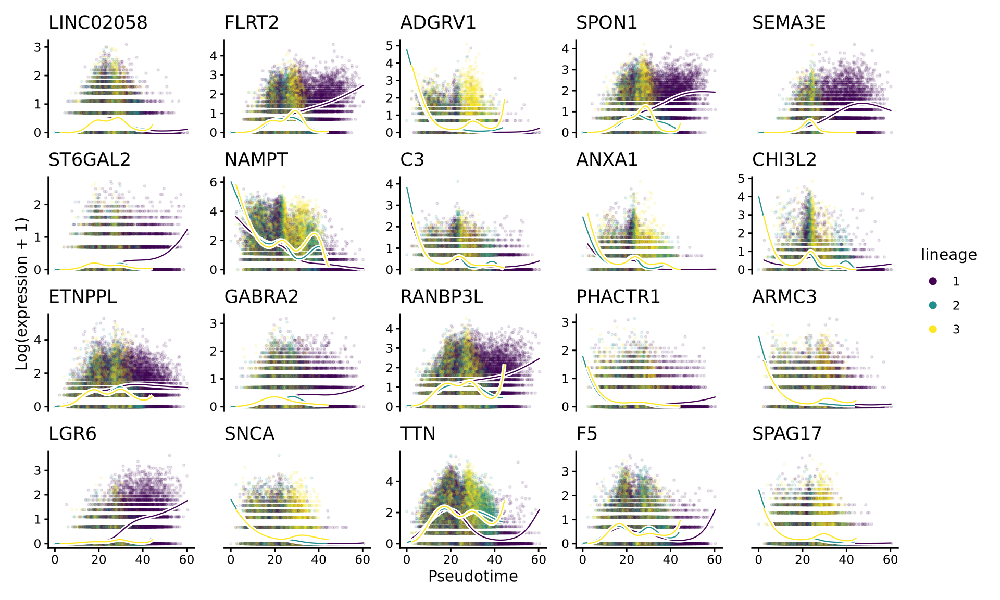
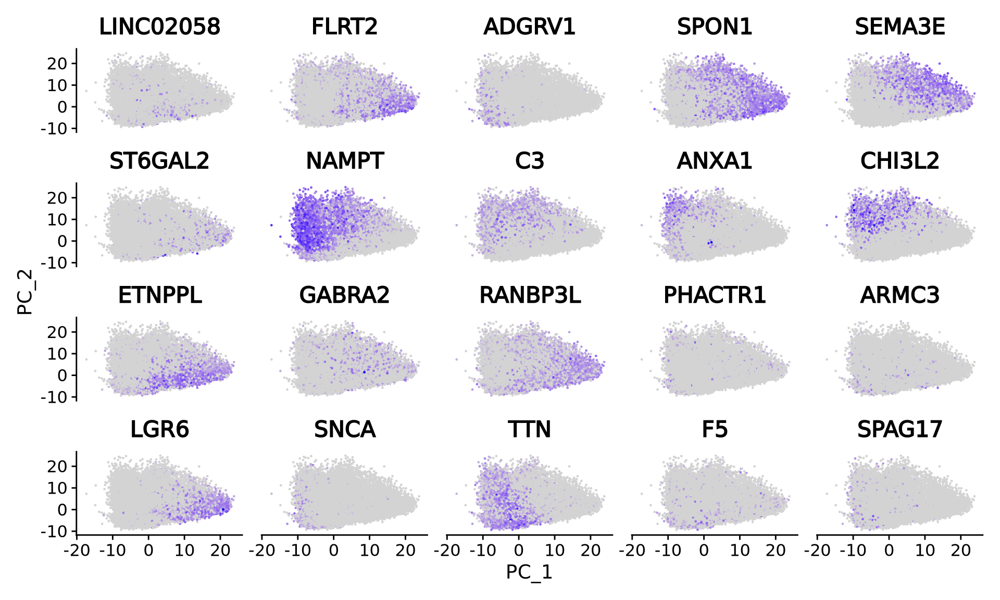
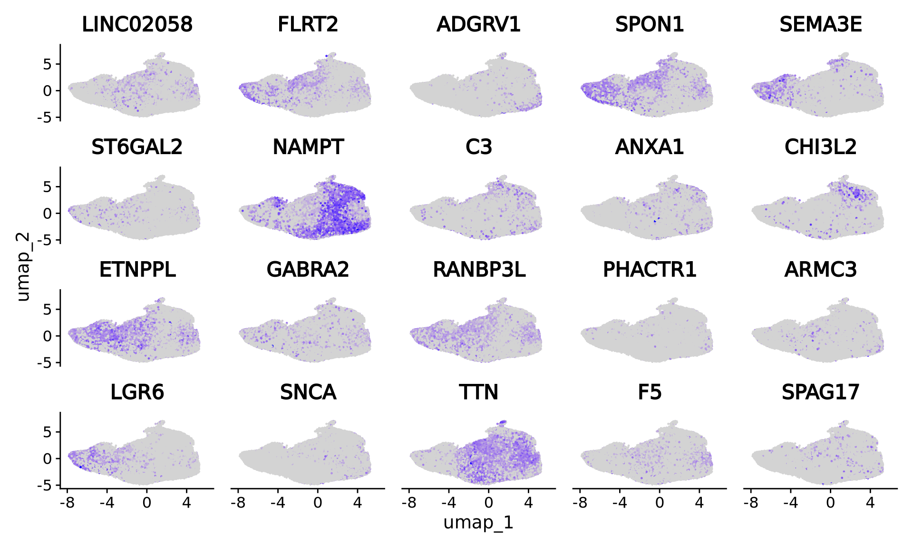
startVsEndTest()
StartVsEndTest tests which genes go up/dowm from start to end per lineage. This is probably the most important one, as I actually get lineage specifics here.
I set threshold at log(2). This tests which genes have a fold change that is significantly higher than 2 or significantly lower than 1/2 within or between the lineages of interest - otherwise genes with low foldchanges might still get high p-values. The output still contains all genes, so I can still use it for GO-terms.
res_svse <- startVsEndTest(sce_tradeseq, l2fc = log2(2), lineages = TRUE)
list_tables <- list()
list_plots <- list()
for (lineage in 1:3) {
list_entry_name <- paste0("Lineage ", lineage)
# Run printable_results() to get a table of top genes
topgenes_table <- printable_results(
res_svse,
test = "startvsend",
lineage = lineage
)
list_tables[[list_entry_name]] <- topgenes_table
# Create visualizations for these top genes
topgenes_plots <- plot_topgenes(
topgenes_table,
sce_tradeseq, counts, seu,
n_genes = n_topgenes_to_plot
)
list_plots[[list_entry_name]] <- topgenes_plots
}Table of topgenes
print_tabset(list_tables, heading_level = 4)| gene | waldStat_lineage1 | df_lineage1 | pvalue_lineage1 | logFClineage1 | adj_pvalue_lineage1 |
|---|---|---|---|---|---|
| PLAGL1 | 146.424978 | 1 | 0.0000000 | -16.959592 | 0.0000000 |
| HPSE2 | 1471.760717 | 1 | 0.0000000 | 15.228847 | 0.0000000 |
| IL1R1 | 30.065906 | 1 | 0.0000000 | -13.596089 | 0.0000011 |
| PID1 | 185.493290 | 1 | 0.0000000 | 11.802802 | 0.0000000 |
| SEMA3E | 90.746305 | 1 | 0.0000000 | 10.447582 | 0.0000000 |
| LUCAT1 | 9.212458 | 1 | 0.0024037 | -8.728914 | 0.0233473 |
| FLRT2 | 273.273008 | 1 | 0.0000000 | 8.696250 | 0.0000000 |
| PRKCB | 18.059330 | 1 | 0.0000214 | -8.345226 | 0.0003370 |
| LPAR1 | 172.591670 | 1 | 0.0000000 | -8.319107 | 0.0000000 |
| SLC6A11 | 94.096909 | 1 | 0.0000000 | 8.294345 | 0.0000000 |
| POU6F2 | 84.758000 | 1 | 0.0000000 | 8.099005 | 0.0000000 |
| GPC5 | 996.986956 | 1 | 0.0000000 | 8.009709 | 0.0000000 |
| PPP2R2C | 70.004069 | 1 | 0.0000000 | 7.652411 | 0.0000000 |
| RHBDL3 | 143.034152 | 1 | 0.0000000 | 7.632304 | 0.0000000 |
| S1PR3 | 20.178908 | 1 | 0.0000071 | -7.584372 | 0.0001237 |
| SPON1 | 192.506467 | 1 | 0.0000000 | 7.501914 | 0.0000000 |
| GRID2 | 174.778427 | 1 | 0.0000000 | 7.148377 | 0.0000000 |
| RFTN1 | 69.152951 | 1 | 0.0000000 | -7.022907 | 0.0000000 |
| ST6GAL2 | 72.832572 | 1 | 0.0000000 | 6.672907 | 0.0000000 |
| CABLES1 | 10.137120 | 1 | 0.0014531 | 6.630063 | 0.0149549 |
| gene | waldStat_lineage2 | df_lineage2 | pvalue_lineage2 | logFClineage2 | adj_pvalue_lineage2 |
|---|---|---|---|---|---|
| HPSE2 | 1171.32554 | 1 | 0.00e+00 | 14.482913 | 0.0000000 |
| CD164 | 66.87557 | 1 | 0.00e+00 | -10.072055 | 0.0000000 |
| ELOVL7 | 15.29166 | 1 | 9.21e-05 | 9.704151 | 0.0001868 |
| PHACTR1 | 81.84018 | 1 | 0.00e+00 | -9.561855 | 0.0000000 |
| MFSD1 | 54.65241 | 1 | 0.00e+00 | -9.225805 | 0.0000000 |
| TMEM59 | 74.95376 | 1 | 0.00e+00 | -9.033518 | 0.0000000 |
| PPFIBP2 | 59.40749 | 1 | 0.00e+00 | -9.002538 | 0.0000000 |
| CYP51A1 | 60.86014 | 1 | 0.00e+00 | -8.886608 | 0.0000000 |
| SHC4 | 61.62898 | 1 | 0.00e+00 | -8.553084 | 0.0000000 |
| TIPRL | 64.92781 | 1 | 0.00e+00 | -8.522207 | 0.0000000 |
| SFT2D2 | 61.22781 | 1 | 0.00e+00 | -8.410822 | 0.0000000 |
| RNF141 | 58.84812 | 1 | 0.00e+00 | -8.382810 | 0.0000000 |
| ABCA5 | 91.42043 | 1 | 0.00e+00 | -8.380239 | 0.0000000 |
| TATDN3 | 65.32377 | 1 | 0.00e+00 | -8.374192 | 0.0000000 |
| RAD21 | 66.91809 | 1 | 0.00e+00 | -8.267384 | 0.0000000 |
| M6PR | 74.24084 | 1 | 0.00e+00 | -8.238404 | 0.0000000 |
| ATP6V1B2 | 68.23842 | 1 | 0.00e+00 | -8.199248 | 0.0000000 |
| KLF3 | 55.40473 | 1 | 0.00e+00 | -8.166368 | 0.0000000 |
| ABHD17B | 52.56876 | 1 | 0.00e+00 | -8.152256 | 0.0000000 |
| ADIPOR2 | 63.37262 | 1 | 0.00e+00 | -8.084385 | 0.0000000 |
| gene | waldStat_lineage3 | df_lineage3 | pvalue_lineage3 | logFClineage3 | adj_pvalue_lineage3 |
|---|---|---|---|---|---|
| NRP2 | 25.78662 | 1 | 4e-07 | -20.312631 | 1.01e-05 |
| GBP2 | 108.56951 | 1 | 0e+00 | -17.641838 | 0.00e+00 |
| CHI3L1 | 37.58339 | 1 | 0e+00 | -13.033333 | 0.00e+00 |
| PGM2L1 | 91.05460 | 1 | 0e+00 | -12.714478 | 0.00e+00 |
| SULF2 | 42.95166 | 1 | 0e+00 | -12.434066 | 0.00e+00 |
| RASGEF1B | 125.90470 | 1 | 0e+00 | -12.430871 | 0.00e+00 |
| HRH1 | 64.80021 | 1 | 0e+00 | -12.333461 | 0.00e+00 |
| ELL2 | 255.35879 | 1 | 0e+00 | -12.304764 | 0.00e+00 |
| DAB2 | 84.94135 | 1 | 0e+00 | -12.163479 | 0.00e+00 |
| CHI3L2 | 58.36891 | 1 | 0e+00 | -11.937698 | 0.00e+00 |
| IL1RAP | 55.01781 | 1 | 0e+00 | -11.777363 | 0.00e+00 |
| ACTN1 | 125.40412 | 1 | 0e+00 | -11.610850 | 0.00e+00 |
| NFIL3 | 75.87168 | 1 | 0e+00 | -11.324378 | 0.00e+00 |
| SIPA1L2 | 202.54437 | 1 | 0e+00 | -11.135492 | 0.00e+00 |
| GADD45A | 40.52420 | 1 | 0e+00 | -11.044193 | 0.00e+00 |
| SORCS1 | 83.88062 | 1 | 0e+00 | -10.937671 | 0.00e+00 |
| ABTB3 | 50.96832 | 1 | 0e+00 | -10.456471 | 0.00e+00 |
| ARID5A | 53.98700 | 1 | 0e+00 | -10.446772 | 0.00e+00 |
| SLC16A7 | 48.69533 | 1 | 0e+00 | -9.955404 | 0.00e+00 |
| COL4A2 | 64.54721 | 1 | 0e+00 | -9.744516 | 0.00e+00 |
Topgenes lineage 1
print_tabset(list_plots[["Lineage 1"]], heading_level = 4)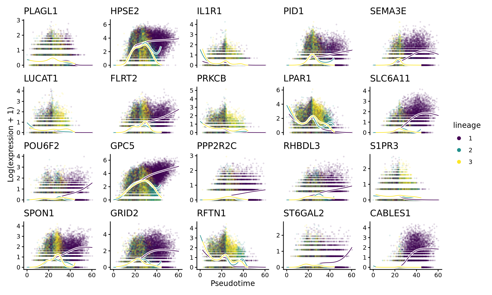
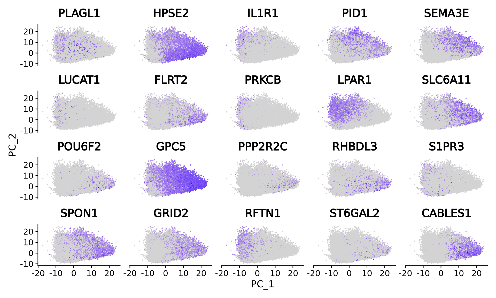
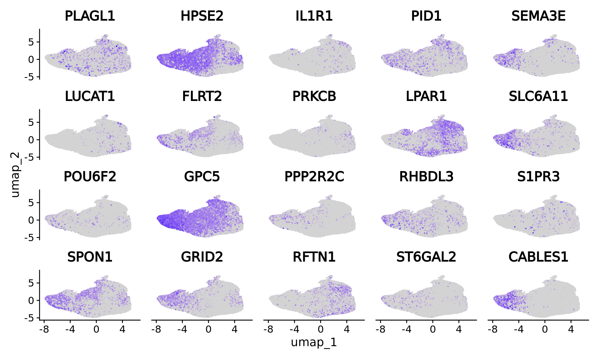
Topgenes lineage 2
print_tabset(list_plots[["Lineage 2"]], heading_level = 4)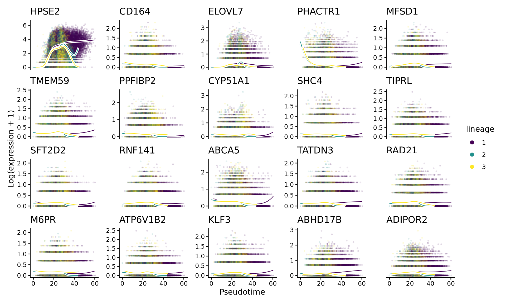
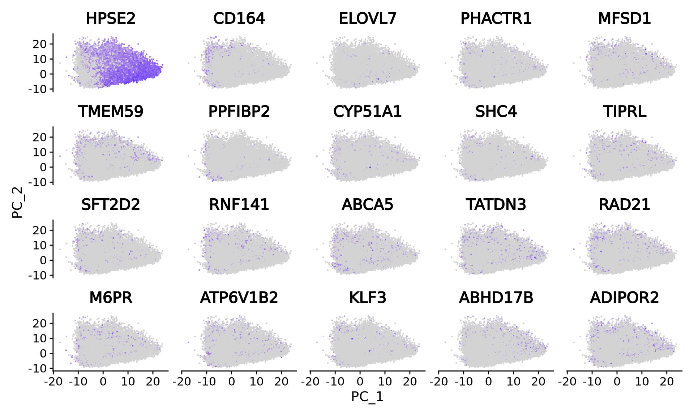
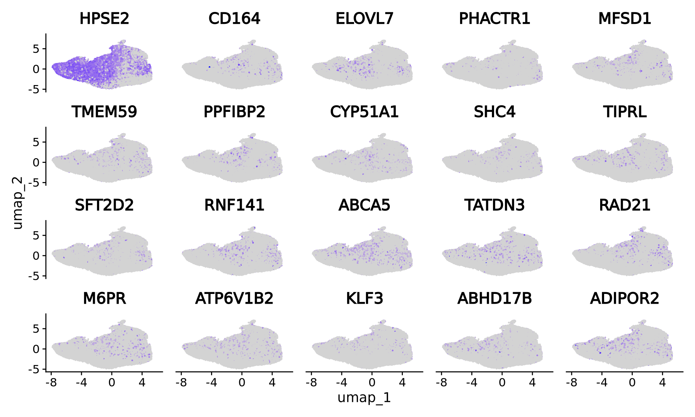
Topgenes lineage 3
print_tabset(list_plots[["Lineage 3"]], heading_level = 4)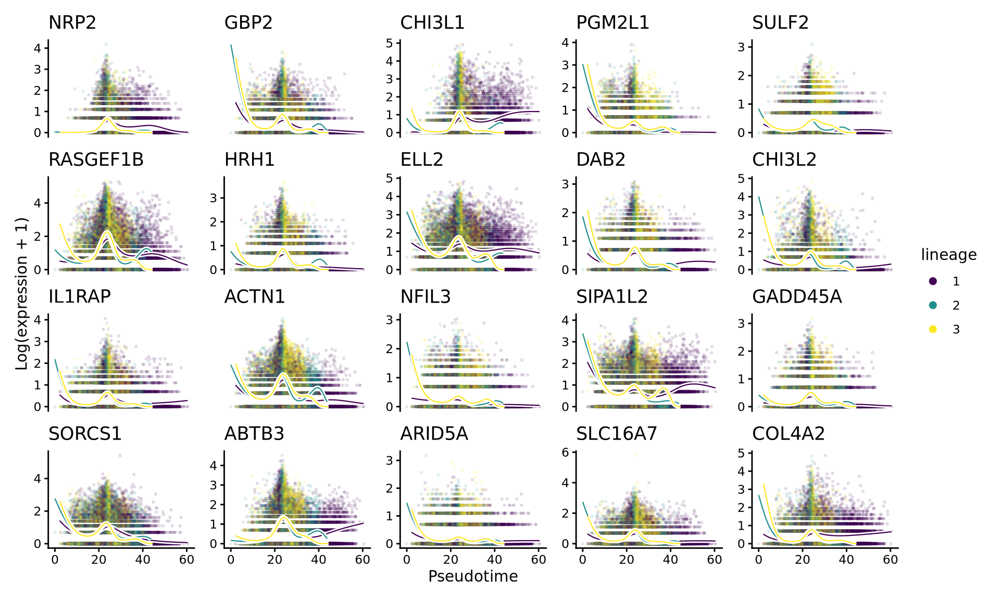
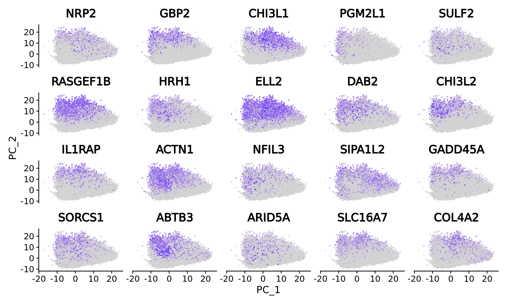
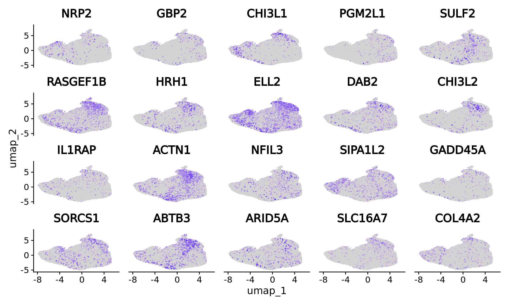
GO-term enrichment
For startVsEndTest(), I also analysed trajectories with GO-term enrichment. I did not do so for the other statistical tests, as these are not lineage specific.
# First load in the gene set using msigdbr::msigdbr()
gs_go_bp <- msigdbr(
species = "Homo sapiens",
collection = "C5",
subcollection = "GO:BP"
)
# Adapt the gene set to the input required for fgsea: it needs to be a list
# with your pathways/gene set names and the genes that make up each pathway.
gene_sets <- split(x = gs_go_bp$gene_symbol, f = gs_go_bp$gs_name)
plots_gsea <- list()
# Run fgsea for each lineage. Store results and plot
for (lineage in 1:3) {
gene_scores <- prepare_gsea(
res_svse,
lineage = lineage,
sort = "logfc"
)
gsea_res <- fgsea(
pathways = gene_sets, # List of gene sets to check
stats = gene_scores,
scoreType = 'std', # std as we have both pos and neg rankings
minSize = 10, # otherwise I only get pathways with 2-5 genes
maxSize = 500,
)
file_csv <- file.path(dir_tab, paste0("goterms_svse_lin", lineage, ".csv"))
# write_csv won't work for the last column, as it's a list column
gsea_res |>
mutate(leadingEdge = map_chr(leadingEdge, str_c, collapse = ";")) |>
write_csv(file_csv)
## Create a visualization
top_pathways <- gsea_pathway_selection(
gsea_res,
n_up = number_of_top_pathways_up,
n_down = number_of_top_pathways_down
)
p_gsea <- plotGseaTable(
gene_sets[top_pathways],
stats = gene_scores,
fgseaRes = gsea_res,
pathwayLabelStyle = list(size = 6),
valueStyle = list(size = 6),
gseaParam = 0.5 # Makes the figure clearer
)
plots_gsea[[paste0("Lineage ", lineage)]] <- p_gsea
}print_tabset(plots_gsea, heading_level = 4)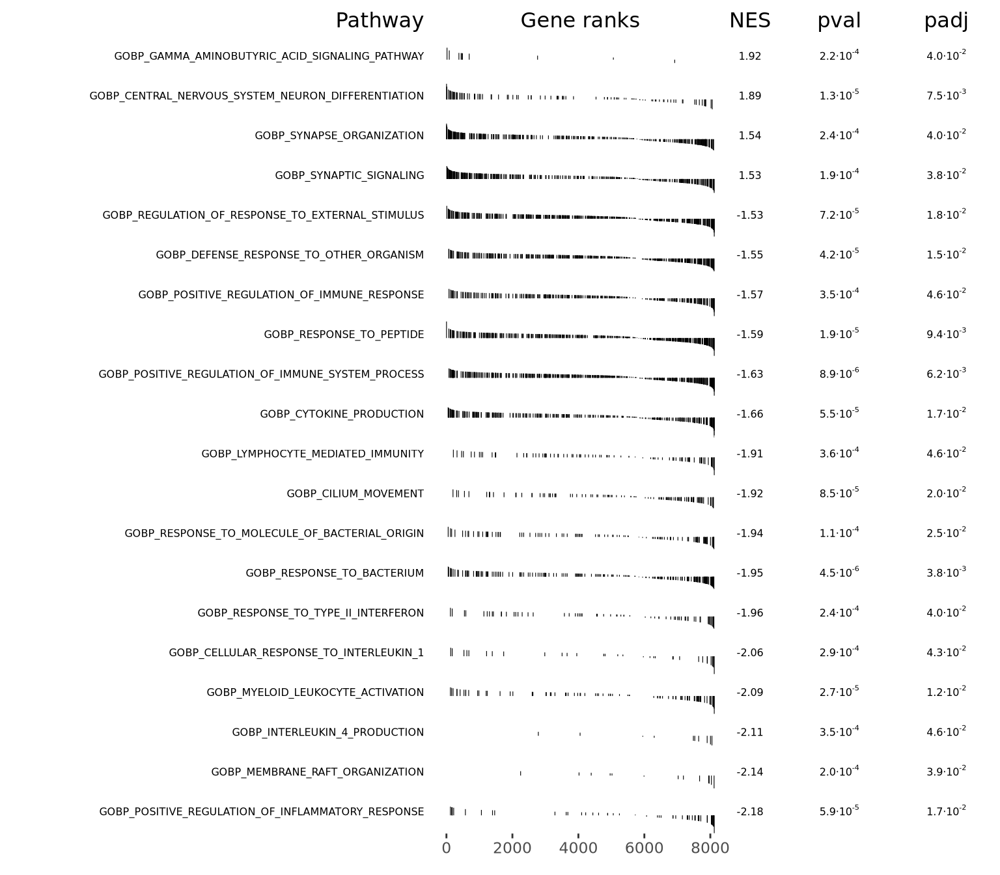
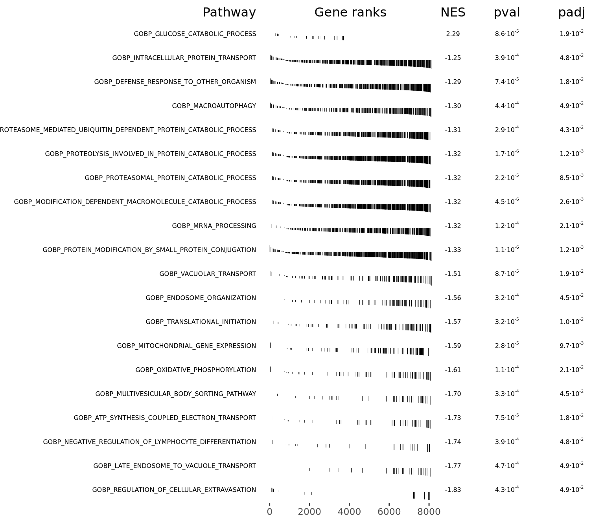
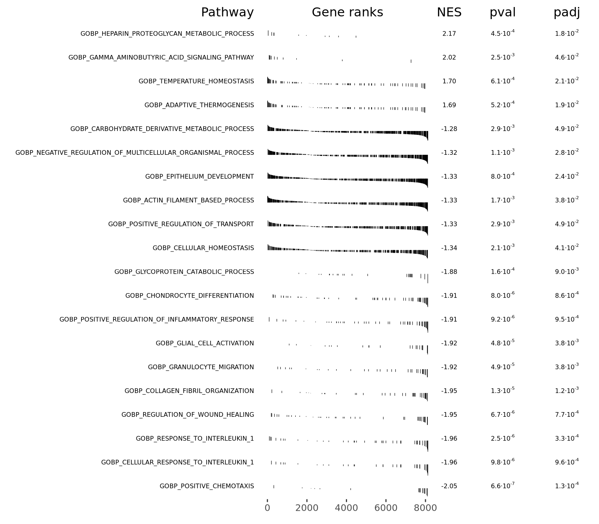
patternTest()
patternTest tests whether lineages follow different shapes. Same l2fc reasoning as with StartVsEndTest().
res_pat <- patternTest(sce_tradeseq, l2fc = log2(2))
printable_pat <- printable_results(res_pat, test = "pattern")
kable(head(printable_pat, 10))| gene | waldStat | df | pvalue | fcMedian | p_adj |
|---|---|---|---|---|---|
| CABLES1 | 116.1172 | 7 | 0 | 2.553590 | 0 |
| THSD4 | 921.6541 | 8 | 0 | 1.968977 | 0 |
| LGR6 | 1129.3057 | 8 | 0 | 1.584297 | 0 |
| CACNB2 | 603.9056 | 5 | 0 | 1.569211 | 0 |
| SEMA3E | 163.9276 | 6 | 0 | 1.565960 | 0 |
| SHISA9 | 181.5485 | 5 | 0 | 1.559986 | 0 |
| CLVS2 | 273.3686 | 7 | 0 | 1.411921 | 0 |
| GRID2 | 1010.6754 | 7 | 0 | 1.399021 | 0 |
| PGM2L1 | 136.1863 | 7 | 0 | 1.364321 | 0 |
| SLC6A11 | 101.4469 | 6 | 0 | 1.308320 | 0 |
plots_pat <- plot_topgenes(
printable_pat,
sce_tradeseq, counts, seu,
n_genes = n_topgenes_to_plot
)print_tabset(plots_pat, heading_level = 3)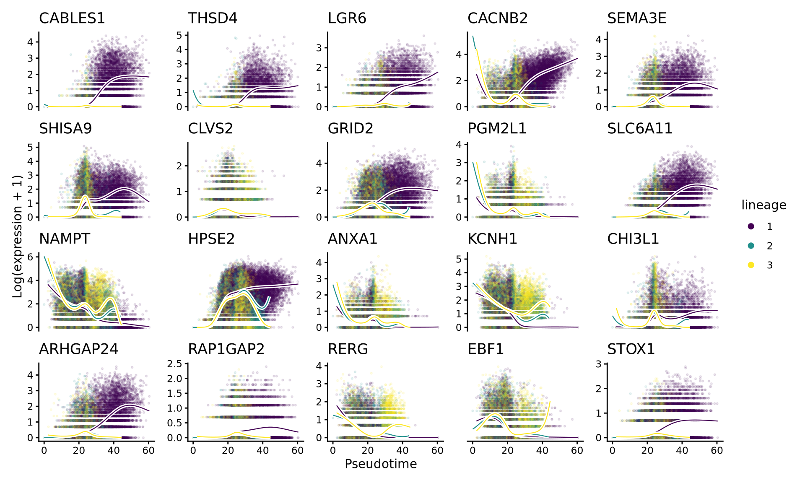
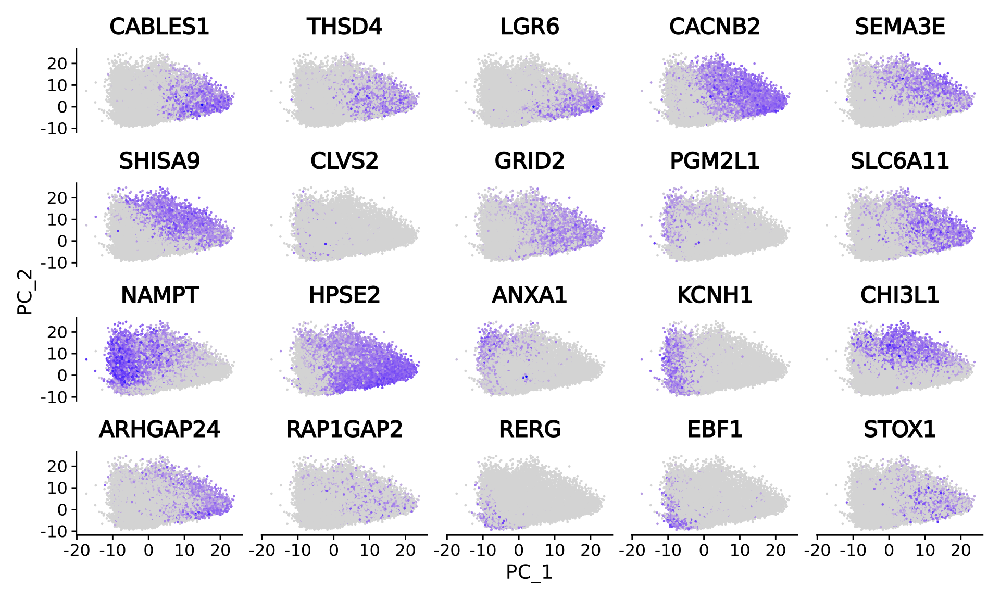
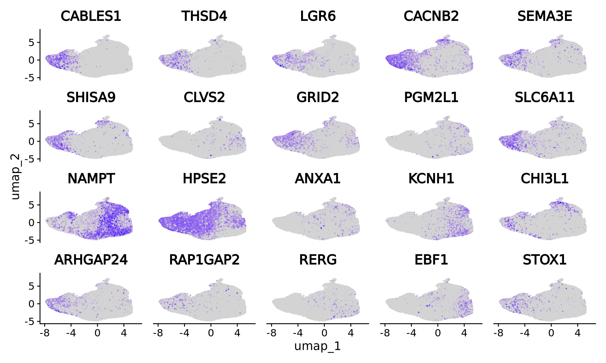
Known reactive astrocyte markers
plots_mark <- plot_topgenes(
mark_rea,
sce_tradeseq, counts, seu,
printable_results_input = FALSE,
ncol = 4,
raster = TRUE
)print_tabset(plots_mark, heading_level = 3)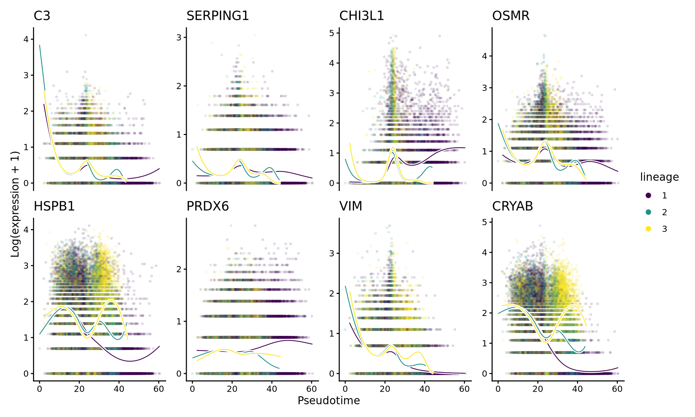
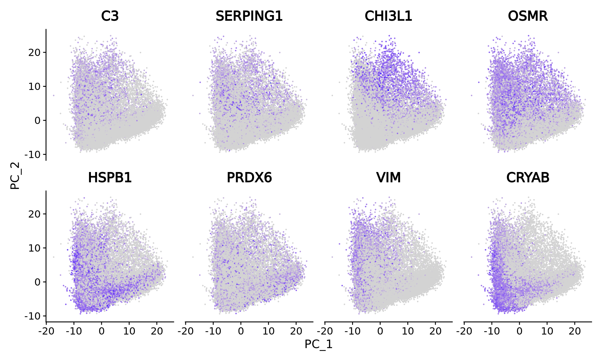
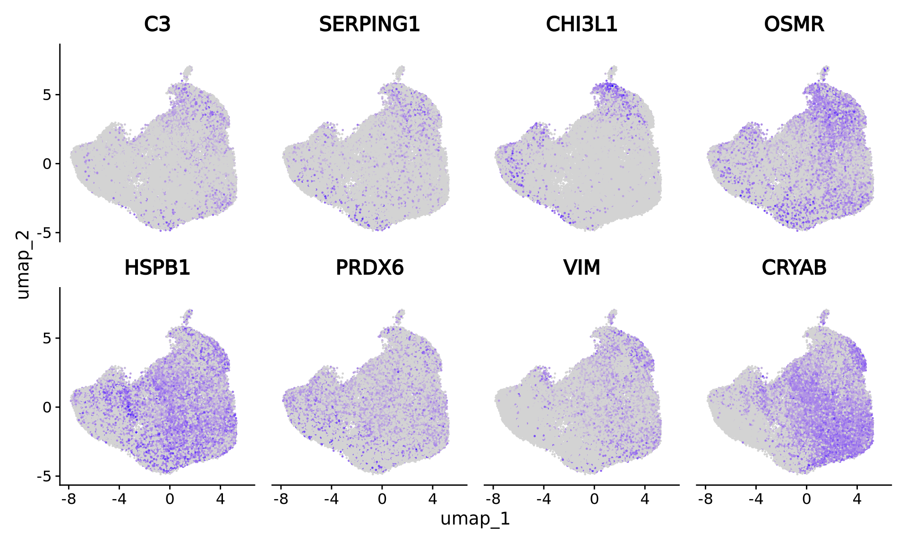
Session info
I used the conda environment r_scrnaseq_core to run this script. You can find major package versions in the file /environments/r_scrnaseq_core.yml, but for full reproducibility, I’ll display all dependencies and package versions below.
sessionInfo()R version 4.4.3 (2025-02-28)
Platform: x86_64-conda-linux-gnu
Running under: Rocky Linux 8.10 (Green Obsidian)
Matrix products: default
BLAS/LAPACK: /path/to/folder/software/miniforge/miniforge3/envs/r_scrnaseq_core/lib/libopenblasp-r0.3.34.so; LAPACK version 3.12.0
locale:
[1] LC_CTYPE=en_US.UTF-8 LC_NUMERIC=C
[3] LC_TIME=en_US.UTF-8 LC_COLLATE=en_US.UTF-8
[5] LC_MONETARY=en_US.UTF-8 LC_MESSAGES=en_US.UTF-8
[7] LC_PAPER=en_US.UTF-8 LC_NAME=C
[9] LC_ADDRESS=C LC_TELEPHONE=C
[11] LC_MEASUREMENT=en_US.UTF-8 LC_IDENTIFICATION=C
time zone: Europe/Amsterdam
tzcode source: system (glibc)
attached base packages:
[1] stats4 stats graphics grDevices utils datasets methods
[8] base
other attached packages:
[1] ggrastr_1.0.2 fgsea_1.32.2
[3] msigdbr_26.1.1 tradeSeq_1.20.0
[5] slingshot_2.14.0 TrajectoryUtils_1.14.0
[7] SingleCellExperiment_1.28.0 SummarizedExperiment_1.36.0
[9] Biobase_2.66.0 GenomicRanges_1.58.0
[11] GenomeInfoDb_1.42.0 IRanges_2.40.0
[13] S4Vectors_0.44.0 BiocGenerics_0.52.0
[15] MatrixGenerics_1.18.0 matrixStats_1.5.0
[17] princurve_2.1.6 Seurat_5.5.1
[19] SeuratObject_5.4.0 sp_2.2-3
[21] here_1.0.2 knitr_1.52
[23] patchwork_1.3.2 lubridate_1.9.5
[25] forcats_1.0.1 stringr_1.6.0
[27] dplyr_1.2.1 purrr_1.2.2
[29] readr_2.2.0 tidyr_1.3.2
[31] tibble_3.3.1 ggplot2_4.0.3
[33] tidyverse_2.0.0
loaded via a namespace (and not attached):
[1] RcppAnnoy_0.0.23 splines_4.4.3 later_1.4.8
[4] polyclip_1.10-7 fastDummies_1.7.6 lifecycle_1.0.5
[7] edgeR_4.4.0 rprojroot_2.1.1 globals_0.19.1
[10] lattice_0.23-1 vroom_1.7.1 MASS_7.3-66
[13] magrittr_2.0.5 limma_3.62.1 plotly_4.12.1
[16] rmarkdown_2.32 yaml_2.3.12 httpuv_1.6.17
[19] otel_0.2.0 sctransform_0.4.3 spam_2.11-4
[22] spatstat.sparse_3.2-0 reticulate_1.47.0 cowplot_1.2.0
[25] pbapply_1.7-4 RColorBrewer_1.1-3 abind_1.4-8
[28] zlibbioc_1.52.0 Rtsne_0.17 GenomeInfoDbData_1.2.13
[31] ggrepel_0.9.8 irlba_2.3.7 listenv_1.0.0
[34] spatstat.utils_3.2-5 goftest_1.2-3 RSpectra_0.16-2
[37] spatstat.random_3.5-1 fitdistrplus_1.2-6 parallelly_1.48.0
[40] codetools_0.2-20 DelayedArray_0.32.0 tidyselect_1.2.1
[43] UCSC.utils_1.2.0 farver_2.1.2 viridis_0.6.5
[46] spatstat.explore_3.8-2 jsonlite_2.0.0 progressr_1.0.0
[49] ggridges_0.5.7 survival_3.8-12 systemfonts_1.3.2
[52] tools_4.4.3 ragg_1.5.2 ica_1.0-3
[55] Rcpp_1.1.2 glue_1.8.1 gridExtra_2.3.1
[58] SparseArray_1.6.0 xfun_0.60 mgcv_1.9-4
[61] withr_3.0.3 fastmap_1.2.0 digest_0.6.39
[64] timechange_0.4.0 R6_2.6.1 mime_0.13
[67] textshaping_1.0.5 Cairo_1.7-0 scattermore_1.2
[70] tensor_1.5.1 spatstat.data_3.1-9 generics_0.1.4
[73] data.table_1.18.6.1 httr_1.4.9 htmlwidgets_1.6.4
[76] S4Arrays_1.6.0 uwot_0.2.5 pkgconfig_2.0.3
[79] gtable_0.3.6 lmtest_0.9-40 S7_0.2.2
[82] XVector_0.46.0 htmltools_0.5.9 dotCall64_1.2
[85] scales_1.4.0 png_0.1-9 spatstat.univar_3.2-0
[88] tzdb_0.5.0 reshape2_1.4.5 nlme_3.1-170
[91] zoo_1.9-0 KernSmooth_2.23-27 parallel_4.4.3
[94] miniUI_0.1.2 vipor_0.4.7 pillar_1.11.1
[97] grid_4.4.3 vctrs_0.7.3 RANN_2.6.2
[100] promises_1.5.0 xtable_1.8-8 cluster_2.1.8.3
[103] beeswarm_0.4.0 evaluate_1.0.5 cli_3.6.6
[106] locfit_1.5-9.12 compiler_4.4.3 rlang_1.3.0
[109] crayon_1.5.3 future.apply_1.20.2 labeling_0.4.3
[112] plyr_1.8.9 ggbeeswarm_0.7.3 stringi_1.8.9
[115] viridisLite_0.4.3 deldir_2.0-4 BiocParallel_1.40.0
[118] assertthat_0.2.1 spatstat.geom_3.8-2 Matrix_1.7-6
[121] RcppHNSW_0.7.0 hms_1.1.4 bit64_4.8.6
[124] future_1.76.0 statmod_1.5.2 shiny_1.14.0
[127] ROCR_1.0-12 igraph_2.3.3 fastmatch_1.1-8
[130] bit_4.6.0